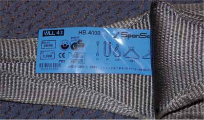
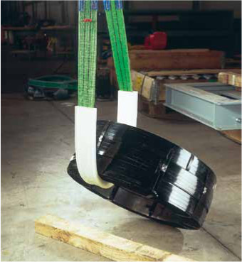

Hebebänder entstehen durch das Vernähen von gewebten Gurtbändern aus Polyester-, Polyamid- oder Polypropylen-Fasern.
Bezogen auf das Eigengewicht besitzen Hebebänder eine hohe Tragfähigkeit und schonen durch ihre Anschmiegsamkeit die Oberfläche der Last.
Rundschlingen bestehen aus einem Fadengelege in einem Schlauch und sind sehr flexibel.
Das Polyester-Hebeband und die Polyester-Rundschlinge sind erkennbar am blauen eingenähten Etikett (Bild 10-1).

Bild 10-1: Polyester-Hebeband mit eingenähtem Etikett
Sie verbinden Licht- und Wärmestabilisierung, gute Beständigkeit gegen die meisten Säuren und Lösemittel mit einem hohen Elastizitätsmodul. Polyester ist der am häufigsten verwendete Werkstoff. Nur beim Einsatz in Laugen ist er nicht so beständig und sollte deshalb auch nicht mit Seife, sondern mit schonenden Haushaltswaschmitteln gewaschen werden.
Demgegenüber ist das Polyamid-Hebeband mit grünem Etikett gegenüber Laugen gut beständig. Der Nachteil des Polyamid-Hebebandes liegt in der starken Dimensionierung wegen der zu berücksichtigenden geringeren Nassbruchfestigkeit und hohen Wasseraufnahme in feuchter Umgebung, die bei Frost zum Steifwerden führt.
Hebebänder und Rundschlingen aus Polypropylen mit braunen Etiketten haben zwar eine geringere Tragfähigkeit bezogen auf ihr Eigengewicht. Sie sind jedoch chemisch sehr beständig und werden entsprechend bei Sonderfällen eingesetzt.
Für den Einsatz in chemischen Bädern aller Art wird empfohlen, genaue Verwendungsangaben des Herstellers einzuholen und dabei Temperatur und Badverweildauer anzugeben.
Hebebänder dürfen nur so eingesetzt werden, dass die gekennzeichneten Endschlaufen im Kranhaken hängen und das Werkstück vom Hebeband aufgenommen wird und nicht umgekehrt.
Je nach Art der Vernähung gibt es
Zur Erhöhung der Abrieb- und Schnittfestigkeit können Beschichtungen oder Überzüge aus sehr schnittfesten Kunststoffen, insbesondere mindestens etwa 5 mm dickem Polyurethan, aufgebracht werden.
Zur Verhinderung von Schnittbeschädigungen werden verschiebbare Schutzschläuche mit dicker Polyurethanbeschichtung verwendet, zum Teil zusätzlich mit eingelegten kleinen Metallteilen (Bild 10-2).
Das Abheben von Coils vom liegenden Stapel, verbunden mit gleichzeitigem Wenden, hat sich als sehr Gefahr bringend erwiesen. Prinzipiell müssen die Coils mit einem Gabelstapler zunächst einmal auf dem Boden abgesetzt werden, bevor sie gewendet werden dürfen.

Bild 10-2: Nur der verschiebbare, innen armierte Polyurethan-Schutzschlauch mit starker, mindestens 5 mm dicker Beschichtung ermöglicht das gefahrlose Wenden des Coils, wenn das Band deutlich länger ist als der Kantenschutzschlauch
Flexible, dünne Schutzschläuche aus 1 bis 2 mm Textil- oder PU-imprägniertem Schutzschlauch, ähnlich einem Feuerwehrschlauch, dienen nur dem Abriebschutz: Sie sind kein Kantenschutz!
Beim Positionieren der Kantenschutzschläuche ist darauf zu achten, dass alle, beim Umfangen von größeren Lasten auch die oberen, scharfen Kanten einer Last abgedeckt sind.
Rundschlingen mit Kantenschutzschlauch sind nur zum Heben, nicht jedoch zum Wenden geeignet, im Kantenbereich entsteht zu viel Wärme.
Durch die Fehlpositionierung von Kantenschutzschläuchen und durch die Verwendung von Abriebschutzschläuchen als Kantenschutzschläuche ist es zu einer Vielzahl von Unfällen gekommen.
Einige Unfälle seien hier als Beispiele genannt:
|
Aber auch beim Einsatz der Kantenschutzschläuche kann es zu Fehlern kommen: Ein Coil war mit 23 t schwerer als die üblichen Coils und konnte so nicht mit einem 20-t-Hebeband mit Kantenschutzschlauch von einem Schiff aus angehoben werden. Man positionierte in dem engen Loch des Coils zwei Bänder nebeneinander, die sich naturgemäß schräg stellten. Dadurch wurden von außen ausgehend beide Hebebänder durch den Kantenschutzschlauch hindurch durchgeschnitten. Die Last stürzte aus 5 m Höhe in das Binnenschiff zurück und zerstörte den Schiffsboden.
Bei einseitig, mindestens 5mm dick fest beschichteten Bändern darf natürlich nur die mit Kantenschutz versehene Seite an der Last anliegen. Damit darf man jedoch keine Last wenden.
Es gibt für Hebebänder und Rundschlingen einige besondere Anwendungshinweise:
Der Wert 1,6-fach aus der alten VGB 9a (heute BG-Regel „Betreiben von Arbeitsmitteln“ [BGR 500], Kapitel 2.8) bezog sich auf Bänder mit dem Tragfähigkeitsfaktor 8.
Einweg-Hebebänder
Einweg-Hebebänder werden häufig für Halbfertigmaterialien eingesetzt, um Rohre, Profile oder Stangen vom Hersteller bis zu bringen. Der Tragfähigkeitsfaktor beträgt 5 bei normgerechten Einwegbändern. Bei Importbändern ist er aus Preisgründen oft auf 4 reduziert. Die Benutzung solcher Bänder ist unzulässig. Die Bänder dürfen innerbetrieblich nicht weiter verwendet und müssen sofort entsorgt werden. Um Missbrauch vorzubeugen, sollte man sie sofort zerschneiden.
DIN 60005 gilt für Einwegbänder mit orangefarbenem Etikett (mit CE-Zeichen). Farben sind nicht vorgeschrieben. Einwegebänder sind oft weiß, wie die meisten Import-Einwegbänder, oder schwarz; solche schwarzen Bänder aus Automobilsicherheitsgurt-Restmengen oder optischen Unterqualitäten werden oft als Schlingen der Holzindustrie zugeliefert und im Fertighaus-Holzbau und Zimmereigewerbe, z. B. in Dachstuhlelemente, mit eingenagelt und nach der Montage zerschnitten.